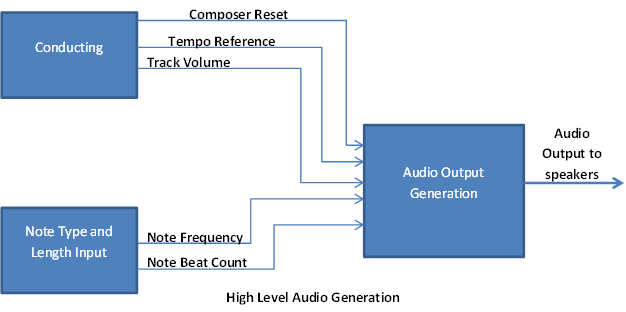

"A hardware-software audio suite that generates user-inputted music through virtual conducting"
For our ECE 5760 final project, we designed and implemented the Audio Composer and Conductor Suite (A.C.C.S): a set of tools to develop and compose new music. The software end handles audio note frequency and note length generation through user based input. FPGA hardware then generates multiple tracks of musical notes on a synthesizer that are played over speakers. Running in parallel with the audio output is video detection hardware to track the user's movements. These movements can change the tempo of the piece, the volume of each instrument, and stop the piece. From beginning to end, the user can write their own music and hear how it sounds at any given tempo and volume in real-time while getting the full orchestra feel.
Logical structure
The entire set up is centered around 2 Altera FPGA Development Boards, a DE2 and a DE2-115. The DE2 is in charge of filtering and hand movement interpretations. The DE2-115 is in charge of Musical Notation and synthesis. A TV camera sits at around head or chest level about 5 feet in front of the user, while a white or black backdrop is put behind the user to block background light and colors. The camera is connected to the DE2 through the NTSC analog video input port. The input is next put through modules to convert it to a VGA output. This output is then put through several filters for color filtering and hand movement interpretations before being outputted into the FPGA. On the DE2-115, we have a Nios II package sitting inside, in charge of musical notation. There are several input methods: send in a sequence of notes from the user's computer to the FPGA through a JTAG UART interface, use a QWERTY keyboard interface (similar to Garageband), where the user would press a certain key and the corresponding note would be played back automatically, or take a digital scan of a photo of sheet music and input it into the program. The program will be able to parse and interpret the image into musical notation that the FPGA can understand. Once the music is stored into memory, the musical synthesis portion of the FPGA will come into play, and depending on the control signals from the DE2, will playback the music in real-time using DDS.
Hardware Design and Implementation
Hardware Overview
The hardware portion of our project contains 2 of the 3 subsystems: the Audio Generation subsystem and the Video Conducting subsystem. The decision to implement these two portions in hardware stems from how they were intended to be used. In the case of the Audio Generation Subsystem, the final goal was to have multiple audio tracks play at once and this would be best accomplished through parallel hardware for each audio track. In the case of video conducting, dedicated hardware allowed for faster recognition of each gesture and user movement.
Audio Generation Subsystem
High Level

Figure 2: High Level Audio Generation
On a high level, note generation requires multiple inputs from both the video tracking hardware and software based note input. On the hardware side, it requires a composer reset to control the flow of the piece, specifically to start and stop at will. The tempo reference provides information about the speed the composer is conducting at and the track volume indicates how loud the conductor wants each audio track or instrument to play. On the software side, a stream of notes with each of their beat counts is sent to the audio generation module to play that series of notes for a certain number of beats.
Generating a Sound
Given the note and conducting information, the audio generation subsystem uses a combination of Direct Digital Synthesis (DDS) and FM synthesis to generate a full-range of instruments and sounds. For the final demo, a synthesized-like piano sound was used.
Direct Digital Synthesis generates instrument like sounds itself by iterating over a sine table at a rate defined by the input frequency and outputting the current value of the sine table. In doing so, a simple tone can be generated. The sine table was implemented as a Look Up Table using registers at reset in the sound generation subsystem.
FM synthesis works through modulating an input signal, in this case the output of the DDS, with some other frequency to generate a new waveform. With certain frequencies, tones can be generated that sound similar to what an instrument, such as a tuba or a violin, would sound like. FM synthesis for this project was written with reference to code from Bruce Land.
To create a rise and fall for each audio note, a linear rise and fall was implemented. For each note, a multiplier would be incremented from zero until it reached some maximum. Following this, the multiplier would be held constant for a length of time proportional to the type of note being played (eighth, quarter, half). Lastly, the multiplier would be decremented until it reached 0 at which point a new note would begin playing.
Interfacing
Since the audio generation subsystem requires input from the other 2 subsystems, a great amount of work was done to create a flawless interface between it and the other 2 subsystems. Heavy testing was done with regards to receiving inputs correctly and reacting to each of these inputs simultaneously, such as updating the tempo as a track’s volume is increased. Multiple enables were used to indicate new notes, or new tracks on the NIOS II (software) side. On the conducting (hardware) side, simple wire inputs were used to implement immediate updates to both the tempo and the volume as well as instantaneous reset.
Due to other issues with updating a single register in multiple always blocks, semaphores were used to lock and unlock certain reset conditions. This created a larger complexity, but allowed for higher robustness and further functionality in our project. For instance, multiple tracks could be played in parallel and each could be updated independently of the other.
Loading onto an FPGA
The audio generation subsystem was written to the same FPGA as the NIOS II subsystem. The NIOS II subsystem required heavy resources with respect to memory and required the DE2-115 for this purpose, while the audio generation subsystem was written to interact with the DE2-115 specifically.
Conducting
Overview
The conducting interface is a rather simple one in concept. The Altera DE2 board is in charge of running the filtering and the positional hand movement interpretations. In order to track hand movements, we used a RGB filter that was aimed towards a red and blue glove that user wears. This a simple interface that served our purposes sufficiently enough. Had we had more time, we would have implemented a more complex interface, which will be talked about later. The RGB filter that we ended up implementing is tunable to the work environment. One thing we had realized was that the amount of light present at all angles was never the same, and hardcoding the RGB thresholding levels would have been extremely difficult in terms of finding a value that worked in all cases. Therefore the best solution was to create a system where the user sets the thresholds at the beginning and then start conducting. You have the option of always switching thresholds in between as well if you want to.
Thresholding
The thresholds on the DE2 were set using SW[16], SW[9:0], and KEY[3:1]. We use SW[16] to determine whether we are changing the Red Threshold values or the Blue Threshold values. SW[9:0] determine the value to which the levels should be set at, and then the KEY buttons determine which level is set. For instance, if SW[16] was 0 (indicating we are setting threshold levels for red), and SW[9:0] were set to some value, and KEY[1] was pressed, the green threshold value for filtering only the red glove was set. Going through setting all six threshold values (RGB for both red and blue) would allow the user to adjust to whichever environment they are currently working in.
Hand Movement Interpretations
The most difficult part of the conducting interface was not the RGB filtering but the hand motion interpretations. While the actual conducting technique itself is the same throughout the world, conductors always have their only little variations that they use. In addition to that, there are conductors of varying arms spans and sizes. We had to accommodate all of them. We decided that we would make do without the variations (so everyone who uses the system would have to conform to the standard four-beat conducting method), and apply a range over which the user would be able to travel to implement the 4/4 method, and this range would accommodate varying arm spans.
NOTE: The conducting method we chose for this project was assumed to be the standard 4/4 two-hand method. As it turned out, the conducting method we used seemed to be a two-handed version of the one-handed method, so we apologize for that.
There are several functionalities that the ‘conductor’ can utilize. The first and foremost is the tempo set. The music doesn’t start playing until the conductor has gone through an entire measure first, which the code interprets and then sends the DE2-115, which is in charge of the musical synthesis portion, a ‘start-play’ enable signal (which was sent through GPIO[20]). Whenever the conductor ends the piece with the appropriate hand motions, then the enable signal will go low, telling the 115 to stop synthesizing. The main information that the DE2 sends to the 115 through the GPIO interface is the tempo count. This tempo count is conditionally calculated based off of how quickly the conductor goes through the state machine in charge of the hand movement interpretations. All conducting calculations are conditional and positional. That is, the sequence in which the conductor might hit a certain spot on the screen will affect what kind of behavior the music will produce. The position of both the Red and Blue Glove matter in this case. As we stated before, we implemented the 4/4 functionality. However, we would like to expand on this, as we will be discussing in the Future Considerations section. From the time that the conductor hits the first downstroke to the time the conductor hits it again, after having gone through the entire measure, the tempo count is calculated and sent over to the DE2-115 for interpretation (through GPIO[19:0]). The fact that it is updated after every measure means that the user can incorporate tempo changes in the middle of the piece if he or she so wishes.

Other functionalities include volume changes. We are able to play multiple tracks simultaneously. Therefore, we wanted to implement an interface where the conductor can easily increase the volumes for individual instruments, based on (once again) the sequence of hand gestures from the conductor. We also implemented overall volume control, so we can raise or lower the entire orchestra's volume at the same time. This was implemented using two bits for each instrument to indicate volume control. the first bit indicated when the volume should be changed, and the second bit indicated in which direction the volume control should happen (increase or decrease). For simplicity, we implemented the volume change through shift operations on the DE2-115. The volume control information was also transferred over to the DE2-115 through the GPIO interface. We implemented such control for 4 total instruments, though we can expand on this if needed. Pins GPIO[28:21] were in charge of the Volume Control.
IP considerations and Infringement
To the extent of our knowledge, the only code that was taken from another source was the Terasic DE2_TV project, which is cane be found here. the NTSC analog video input and converted it to a VGA Output. We took the inputs of the VGA Control Module and put it through custom filters and interpretation modules before outputting it to the VGA. All the code in the filters and interpretation modules were our own. If we missed any IP infringements, we apologize. Please notify us immediately, and we will submit the proper
Software Design and Implementation
Nios II Subsystem
We filled up the rest of the audio generation FPGA with a powerful Nios II core to handle human computer interactions and image detection. We wrote three libraries to handle the main components of the system: an interface library, audio library, and image library.
This portion of the project was done primarily in software due to the iterative and recursive nature of some of the image processing algorithms. Furthermore, as all the functions with computational overhead do not need to be run in real-time, and take a negligible time to compute, software was chosen for ease of development. Finally, being able to use the JTAG-UART interface as both an input method and a debugging tool helped significantly during development.
Hardware Communication
To communicate with the hardware we used a 16 bit output from the Nios II to the audio system, following a specified communication protocol (similar to a SPI master slave protocol, where the Nios II is the master and the audio module is the slave). This is done by setting the dataTransmission line low and toggle a new note clock, indicating there is new data to be stored as a note. For we sent 14 bit, 3 indicating duration, and the rest specifying the frequency of the note. The first “frequency” we transmit is interpreted as which track we specifying. This allows us to load multiple different scores to the hardware.
Interface Library
The interface library handle the external communications that the Nios II had to handle. The Nios II must communicate with the rest of the hardware and the computer, while maintaining its own internal state. The primary purpose of the library was to convert the internal Nios II states to the communication protocol specified. For communicating with the hardware, the protocol is specified in the previous section. Implementing it was a simple matter of toggling the necessary bit on the I/O port to conform to the protocol.
Communication with the computer was the larger component. We had to do custom string parsing the sent data. Based on the command sent, we could determine if we should parse the input as a note stream, a keyboard stream, or an image stream. Each string was formatted in a different way, due to the fundamental difference between the data types. This was done through an iteration of the character array, and processing each character as required. The details on the communication protocol is discussed further in the Computer Interface section.
Audio Processing Library
The primary purpose of this library was converting notes into physical space. That is, taking a specified note, octave, and modifier generate proper frequencies associated with it. Notes are stored internally in a similar format to human expression. We store the note octave, letter (as a number 0-7), the length, and its modifier (sharp or flat). This allows for a simple mapping between the user score modification and the internal storage.
The more complicated portion was converting the notes into the physical space that the hardware understood. Translating the duration was simple, as the hardware timings where represented in the number of 16th notes. Thus, we could simply pass the duration in terms of 16th notes (E.G. a 8th note is 2 16th notes). To obtain the frequency we first convert the note into standard midi notation. There are 12 notes per octave (7 notes, plus all the notes sharp (excluding B#=C,E#=F)), and midi notation begins counting for octave 0. Thus the midi note is given by
Finally, translated from midi notation to the note frequency is give approximately by
Where 440Hz is the frequency of middle A in modern concert pitch. This can be easily tuned in our system to support other pitch standards.
Finally it also gives the image processing library a simplified interface for specify notes to be stored internally. It provides a function that converts given a staff, location on the staff, and type information, the musical note representation.
Image Processing Library
The final major component of the Nios II system was image recognition. The image processing library handles a binary image, and the extraction of notes from the image. We need to work on binary images as the on chip memory of the Nios II is not sufficient to store all the information we need for 8 bit images. We need to compute several “image” masks, and compare them, which prevents us from moving from binary images. However, this does not provide any limitations as color does not transmit any musical information. Thus as long as the preprocessing threshold for binarization is properly tuned (for which in practice has a very large tuning range), then the binary image representation is sufficient.
On a high level it works by computing a contour mask, matching these with staff positions then determining the note type. We fill the contour mask with all points which have a path from a pixel back to itself, only traversing other pixels once. Second we also compute a vector containing all the staff bar locations and compute a mask with the vertical bars in the image. After filtering the vertical and horizontal bars from the contour image, we match the contour and the horizontal bars to determine where on a staff the note lies, and thus what note it is. The detection is limited from 1 below the staff, to 1 above the staff (11 positions). To determine the duration, we bound each contour in the contour mask, and determine a fill percentage. If it is over 75% filled then we mark it as a possible quarter or eighth note, otherwise a possible whole or half note. Next with the computed vertical bar mask, we see if there is a vertical bar attached to the note. This allows us to differentiate half notes from whole notes. Finally, we check if there is contour at the top of the vertical bar. If there is, then we mark the note as an eighth note, and filter that contour from being a possible separate note.
These note computation comparisons proceed from left to right per staff, filling a note array. The function returns the number of notes in the track to the main function, which then handles sending the note array to the hardware as described previously.
Computer Subsystem
The final component of our project was the computer interface to the FPGA setup. This supports specifying music tracks, sending images for track extraction and real-time keyboard for note testing. This is all done through the JTAG-UART interface to the onboard Nios II.
Nios II Interface
The interface to the Nios II is defined a <#> <string>. The number indicates the string type, encoding if the image is an image, or which a track is being sent. If the input is a score, then we encode the notes are in a format of <#duration><Note><Modifier?><#octave> in the string. The modifier may be omitted, and specifies whether the note is a sharp or not. We ignore all other whitespace, such as spaces, parsing character by character in a state machine. This allows for malformed inputs to be detected, and reported to the user.
If the <#> identifies keyboard playing mode, then the string is used to determine which track to play on. In this input mode, a wrapper is invoked on the host machine (discussed in more detail later), that permits the key presses to be immediately sent to the Nios II cpu. Thus, after interpreting the key presses in this mode, the information can be immediately forwarded to the hardware to hear the response. There is no noticeable response lag between a key press and the sound.
The string is for an image is custom made encoding, which provides our images with ~50x compression over binary images. First we convert the input image (which can be either a score found on the web, or one held up to the webcam), and convert it to a binary image, based on a threshold for each pixel. In practice since nearly all sheet music is written in black and white, nearly any threshold can be chosen. Next we convert this into sendable characters over the computer-nios connection. Finally, since there is a tremendous amount of white space on sheet music we compress continuous bits into a substring with the bit, and the number of times repeated. On the receiving side this can be quickly mapped to an image by passing over the string, setting the bits appropriately, and doing a memset for large chunks of similar bit strings.
GUI
We have a simple GUI which simplifies the human interaction for complying with the interface specified above. It can read in an image of any common format, and translate it to the bitstream needed to be sent to the Nios II. Furthermore, it handles the necessary tweaks for keyboard interaction. As the communication is done through a stty terminal as a wrapper, commands are only sent when enter is pressed. However to get real time key presses, and a natural feel, the key should go through as soon as it is pressed. To do this we intercept keyboard inputs and attach an enter key after ever note keystroke to simulate a “piano” keyboard. This is enable through just a button press on the GUI, and allows for a natural interaction with the hardware sound system.
Results
Speed and Accuracy
The final project demo showcased a fully working design from reading in user input in the form of single notes, sets of notes, or even images of notes to play back with conducting occurring in real-time. The gestures worked as was intended: controlling the tempo, the volume of each track, and when to reset or stop the piece.
The notes defined by the user were played at the correct pace and were played at the correct frequency. Each note frequency sounded distinct from the others. Multiple track playback also worked as intended with a demonstration playing two pieces of Titanic music simultaneously.
Safety in the design
To enforce safety throughout this project, care was taken to only use the FPGA boards on anti-static mats to prevent any shocks or electrocutions. Also, care was also taken to take breaks when conducting as standing for long periods of time can be detrimental.
Usability
The setup of this design is such that any user can make use of it with knowledge of how the video input detects the conducting and the format for note input. The only other requirement is with respect to the RGB system currently being used, users wearing red or blue will have difficulty making use of this.
Conclusions
Summary
The final design we implemented met the expectations we had set going into this project. It worked flawlessly, and each feature that was in mind from the onset was implemented. We are very happy with the final results.
Future Considerations
Our first change that we would implement is a change in the filtering process. As stated before, we had used an RGB thresholding scheme. In hindsight, the YCrCb filtering scheme would have been more robust, because we can actually work with skin tones quite well with that kind of filtering. The different range of skin tones is actually based on the amount of melanin that one has in his or her skin. Therefore, we get rid of the intensity value, which corresponds to the amount of melanin that you would have in your skin, the resulting range of values is quite small, so one could easily implement a filter that removes everything but skin tones out of the picture. The trouble with this is that facial features will also pass the filter, because it is still skin. in addition, if the user is wearing short sleeves, then the entire forearm would get picked up, instead of just the hands. Therefore, clever algorithms would have to be implemented in order to get just the hands recognized. The other addition that we could use is the HVS system, to reduce the effect of different hues (working in an area with natural lighting versus artificial uniform lighting). We made the RGB filtering somewhat tunable, but it was still susceptible different lighting conditions. The YCrCb filtering and/or HVS filtering would make it a lot more robust.
The other ways we could expand on this deals with the actual conducting. Instead of limiting to a 4/4 signature, we could expand to 3/4, 7/4, etc. In addition, as we had mentioned before, we implemented a weird conducting scheme that is not the typical conducting scheme. Therefore, we could create a calibration step that would get an idea of how each individual user conducts, and tune it to that person, before playing the music. That way, we could accommodate all users.
we were also not able to get variable instruments working, due to a hybrid rise and fall time calculation scheme that resulted in us losing half the variables that dictate how the output sounds. Losing these variables severely reduced the types of outputs we could produce. If we had more time, we would work intensively to produce significantly different instruments, and ultimately produce enough instruments to recreate an entire orchestra.
Intellectual Property
Code reused in this project includes FM synthesis code written by Bruce Land for the Atmega1284. Nios II Hardware subsystem was generated using tools from Altera, and the software with the headers provided to function on the generated hardware
Ethical Considerations
Multiple actions and decisions were made to stay in line with the IEEE Code of Ethics. This project acts strictly in the betterment of society. The current system only allows for conducting of music. The project encourages those who otherwise don’t have a music background to use the system and see what they can do. Ease of use is high and the positive impact is also high. Though because there is an audio output, the users are trusted to keep the sound at reasonable levels to prevent hearing damage.
We made sure to set weekly deadlines such that our deliverables were available to the team for use. If deadlines were not met, new deadlines would be assigned, but it was on each member to have all their new deliverables as well as the old available at the next deadline. Communication was used heavily beforehand meetings and during, so that everyone was on the same page. The decision for this project was made as each team member has a large background in music and all were keen on implementing an idea using music as a foundation. Any problems we had, be they technical or otherwise, were first discussed with teammates and then questions were asked to relevant parties.
Since the system is strictly on FPGAs, measures were taken to prevent electric shock both to the team and to the FPGAs. The FPGAs were only used on anti-static mats because of this.
Appendices
A. Code Listing
Please contact us for reference code.
D. Distribution of Work
Eashwar
- Video Conducting Hardware
- Interfacing with Audio Generation Subsystem
- General debugging
- Final product assembly
Erik
- Nios II Software
- Interfacing with Audio Generation Subsystem
- Audio Note Recognition Software
- General debugging
- GUI and Computer Interface
- Final product assembly
Anshul
- Audio Generation Hardware
- Interfacing with Video Conducting and Nios II Subsystems
- General debugging
- Project Website
- Final product assembly
References
Below are links to external documents, code, and websites referenced and used throughout the duration of this project.
Datasheets
References
Acknowledgements
We'd like to thank Professor Bruce Land for all his help in getting this project up and running. There were many errors, many questions, and a lot of problems that needed to be fixed. We'd also like to thank Annie Dai for being a superbly helpful TA. Also, a thanks to Aadeetya Shreedhar, Chris Fairfax, and Matheus Ogleari for pointing us to the DE2_TV project and Seonwoo Lee for feedback on the project.